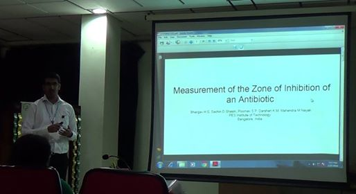
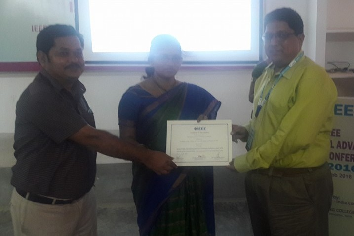

February 25th, 2016 was going to be a memorable day in my life. I was boarding a bus to Vijaywada, en route, SRKR Engineering College, Bhimavaram where the 6th IEEE International Advance Computing Conference was going to take place. The 14 hour ride flew by in a few moments as I was quite excited about the conference. There in Vijaywada, The Head of the Department of Computer Science, PESIT was to join us. We then left for Bhimavaram and after nearly four hours we were at ground zero.
Five months before the conference, Working at two different centers of my college, I had managed to submit two different papers for IACC 2016. One of them, titled Application of Blooms Taxonomy in day-to-day Examinations was the output of a project conducted at Ordell Ugo under the guidance of Prof Nitin V Pujari. The other, titled Measurement of the Zone Of Inhibition of an Antibiotic was the result of a interdisciplinary project conducted at the Crucible of Research and Innovation under the guidance of Prof Mahendra M Nayak. The acceptance mail and copyright form for the publication arrived in January, 2016.
The conference started out on a bright note with Keynote lectures and addresses from the Chair and Co-Chair of the conference. The Conference was well organized.
SRKRC has organized IEEE IACC 2016 very well #iacc2016 pic.twitter.com/XOk48hDN9A
— Bhargav Rao (@BhargavHS) February 27, 2016
All the presentations were organized in parallel in eight different venues. There were a total of three different batches (spread over two days, 27th and 28th February). There were 150 papers accepted for presentation out of 1500.
The presentation of my first paper, Measurement of the Zone Of Inhibition of an Antibiotic, was scheduled at 2:30pm IST. The presentation was organized in the mechanical department's seminar hall. The presentation was for eight minutes followed by a round of questions from the audience for five minutes. Finally, after all the presentations, the conference committee gave our certificates.

Presenting the CORI Paper

Accepting the certificate
The presentation of second paper, Application of Blooms Taxonomy in day-to-day Examinations, was held at 4:30pm IST. It was presented by our guide. The procedure was the same, which is, eight minutes of presentation followed by 5 minutes of questions. Finally the certificates were presented.

Prof Nitin Pujari accepting the certificate
Overall it was a good experience. We were provided transport, by the organizers, for the next day to Vijaywada. From Vijaywada, we returned by a 14 hour long journey. Hence my first ever IEEE conference paper presentation came to a happy end.